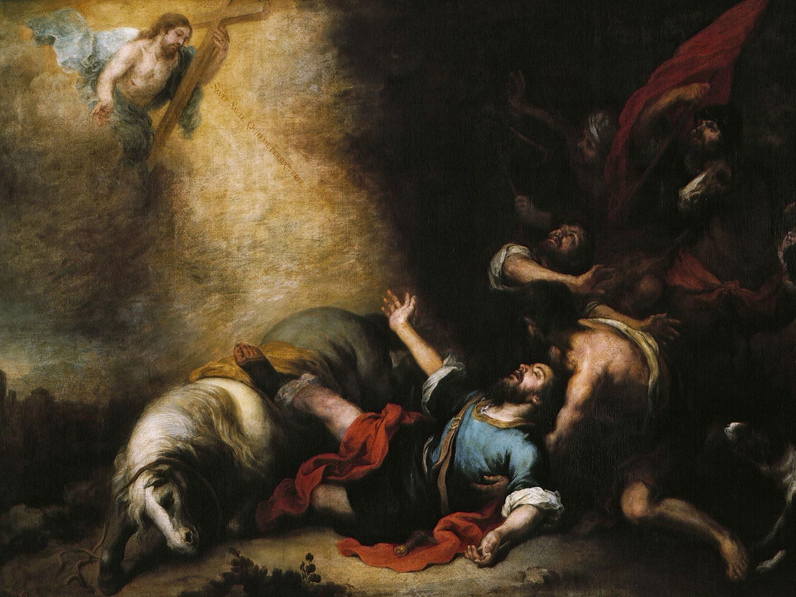

A História da Arte é o estudo da evolução das manifestações artísticas ao longo do tempo, analisando não apenas as obras, mas também o contexto cultural, social e histórico em que foram criadas. A disciplina se formalizou no século XIX, mas o interesse por arte remonta à Antiguidade. No Renascimento, a arte passou a ser vista como um campo de conhecimento, e, com o tempo, a História da Arte se expandiu para incluir diversos períodos, estilos e culturas.
Os estudos artísticos envolvem abordagens como análise formal, iconografia e o contexto histórico. A arte é entendida como um reflexo de sua época, mas também como uma força capaz de moldar a sociedade. Ao estudar a História da Arte, podemos compreender melhor as obras, os processos criativos e o impacto da arte ao longo do tempo, conectando o passado, o presente e o futuro das artes.
Abaixo consta uma tabela onde apresenta os períodos artístos na história e suas principais características.
| Período | Data Aproximada | Características Principais | Artistas/Destaques | Exemplos de Obras |
|---|---|---|---|---|
| Pré-História | 30.000 a.C. - 3.000 a.C. | Pinturas rupestres, esculturas em pedra | Desconhecidos | Caverna de Lascaux, Vênus de Willendorf |
| Egito Antigo | 3.000 a.C. - 30 a.C. | Arte simbólica, hieróglifos, tumbas e templos | Anônimo | Máscara de Tutancâmon, Pirâmides de Gizé |
| Grécia Antiga | 900 a.C. - 31 a.C. | Esculturas realistas, templos, proporção áurea | Fídias, Praxíteles | Partenon, Discóbolo |
| Renascimento | 1300 - 1600 | Perspectiva, realismo, estudo da anatomia | Leonardo da Vinci, Michelangelo, Rafael | Mona Lisa, Capela Sistina |
| Barroco | 1600 - 1750 | Contraste de luz e sombra, movimento, drama | Caravaggio, Rembrandt, Velázquez | O Chamado de São Mateus, As Meninas |
| Impressionismo | 1860 - 1890 | Pinceladas rápidas, captação da luz | Monet, Renoir, Degas | Impressão, nascer do sol |
| Modernismo | 1900 - 1970 | Abstração, experimentação, vanguardas | Picasso, Dalí, Kandinsky | Guernica, A Persistência da Memória |
Dentre os sete períodos anteriormente apresentados, será explicado três principais períodos da história da arte no mundo, e seu contexto histórico.
O Renascimento (séculos XIV a XVI) foi um movimento cultural que marcou a transição da Idade Média para a Idade Moderna, caracterizado pela redescoberta dos valores e saberes da Antiguidade clássica (Grécia e Roma). Esse período viu o surgimento de uma visão antropocêntrica, com foco no ser humano e na razão. O Renascimento foi impulsionado por mudanças históricas como o crescimento das cidades italianas, o mercantilismo e as descobertas científicas, além da invenção da imprensa. Grandes artistas e pensadores, como Leonardo da Vinci, Michelangelo e Galileu Galilei, uniram arte e ciência, transformando a cultura europeia e moldando a base da modernidade.
A seguir será apresentado uma obra de arte que marcou e se tornou símbolo do Renascimento.

A obra acima se chama "A Última Ceia" de Leonardo da Vinci (1495-1498) é uma das pinturas mais icônicas da arte ocidental, retratando o momento em que Jesus revela aos seus discípulos que um deles o trairá. A obra é famosa pela sua inovação na composição, especialmente o uso da perspectiva linear, que direciona o olhar para o centro, onde Jesus está. Ele é cercado pelos doze apóstolos, que reagem com expressões distintas, refletindo suas emoções.
Os principais artistas desse período foram
O Barroco foi um período artístico que se estendeu do século XVII ao XVIII, caracterizado por sua expressividade dramática, ornamentação exuberante e o uso do contraste de luz e sombra (tenebrismo). Surgiu no contexto da Contra-Reforma Católica e do absolutismo, buscando emocionar e impactar o espectador, com foco em temas religiosos e políticos. A pintura barroca, com artistas como Caravaggio e Rembrandt, é marcada por cenas dramáticas e intensas, enquanto na escultura, Bernini criou obras que parecem estar em movimento. A arquitetura barroca destaca-se pela grandiosidade e detalhes ornamentais. O Barroco foi uma resposta emocional ao racionalismo do Renascimento, deixando um legado duradouro na arte e cultura ocidentais.
Ela retrata o momento dramático em que São Paulo, caindo de seu cavalo, tem uma visão de Cristo, que o chama para
a conversão. A obra é um exemplo do uso intenso do tenebrismo (contraste de luz e sombra) e da emoção.
Caravaggio destaca a dramaticidade e o realismo, com figuras humanas retratadas de forma vívida e expressiva. A
pintura reflete bem as características do Barroco, como o foco no movimento, no realismo e na intensidade
emocional.
A obra encontra-se atualmente na Galeria Borghese, em Roma, Itália. Este renomado museu,
que abriga uma das coleções mais impressionantes de arte da cidade, possui diversas pinturas de Caravaggio,
incluindo "A Conversão de São Paulo".
Os principais artistas desse período foram
O Impressionismo foi um movimento artístico que surgiu na França, no final do século XIX, e buscou capturar a impressão imediata de uma cena, focando nas cores e na luz natural. Os artistas impressionistas abandonaram as técnicas acadêmicas e pintaram ao ar livre, com pinceladas rápidas e soltas, para registrar o momento efêmero. Eles retrataram cenas cotidianas, como paisagens, ruas e momentos sociais, sem se preocupar com o realismo detalhado. Principais artistas como Claude Monet, Pierre-Auguste Renoir, e Édouard Manet deram destaque ao uso da luz e cor, e o movimento abriu caminho para a arte moderna. O Impressionismo, inicialmente rejeitado, se tornou uma das mais influentes revoluções na arte do século XIX.

Esta pintura é considerada a obra que deu nome ao movimento Impressionismo. Monet retrata o porto de Le Havre, na França, com uma luz suave e cores vibrantes que capturam a atmosfera matinal e os efeitos da luz sobre a água e o céu. O uso de pinceladas rápidas e soltas, características da técnica impressionista, cria uma sensação de movimento e impressão fugaz, ao invés de uma representação precisa e detalhada da cena.
Os principais artistas desse período foram
Este formulário tem por objetivo coletar informações sobre interesse do leitor para tornar o site personalizado.